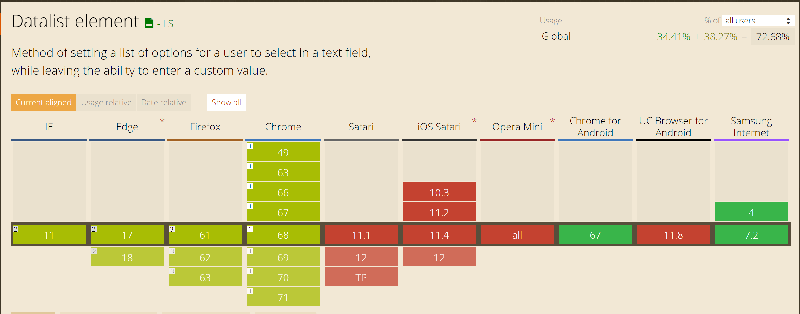

HTML is building blocks, CSS are the sheets that keep the styling to those blocks separately
What is the newest version of HTML?
HTML5
What are the top five most used HTML5 elements? If not sure, make a guess.
Your answer here, structured as an unordered list
Have you checked out the HTML5 cheatsheet?
What is the difference between semantic and non-semantic elements?
Semantic elements have a clear meaning, non semantic dont.
Why do we prefer using semantic elements?
clear structure and easier for search engines to work with.
Do all browsers support all of the newest HTML / CSS elements?
No
Test the following elements on Can I Use: svg, nav, code, form, datalist. Which browser version support them and which do not?
